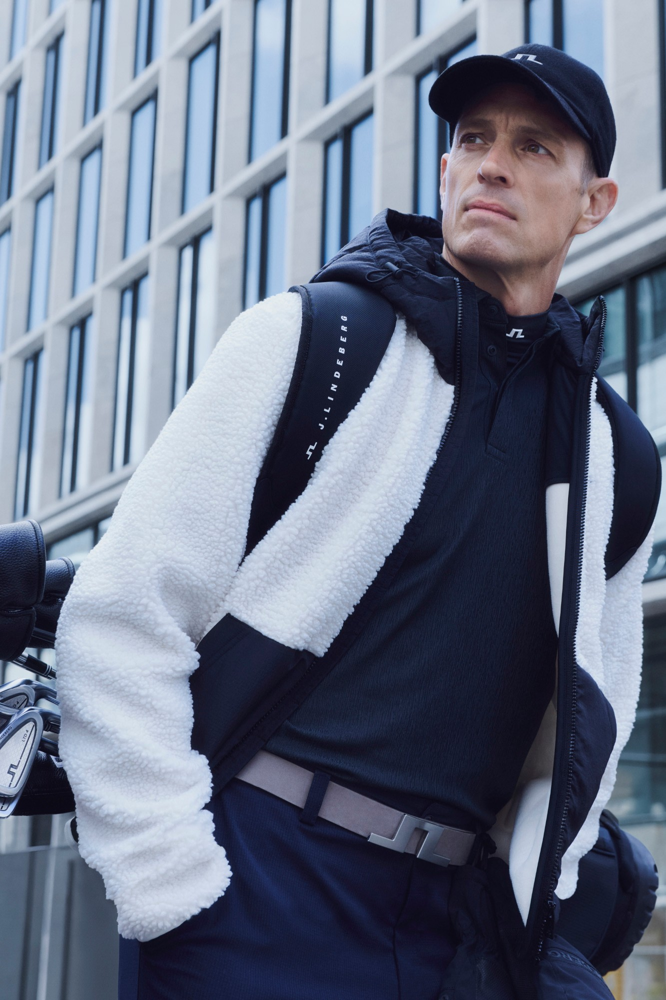
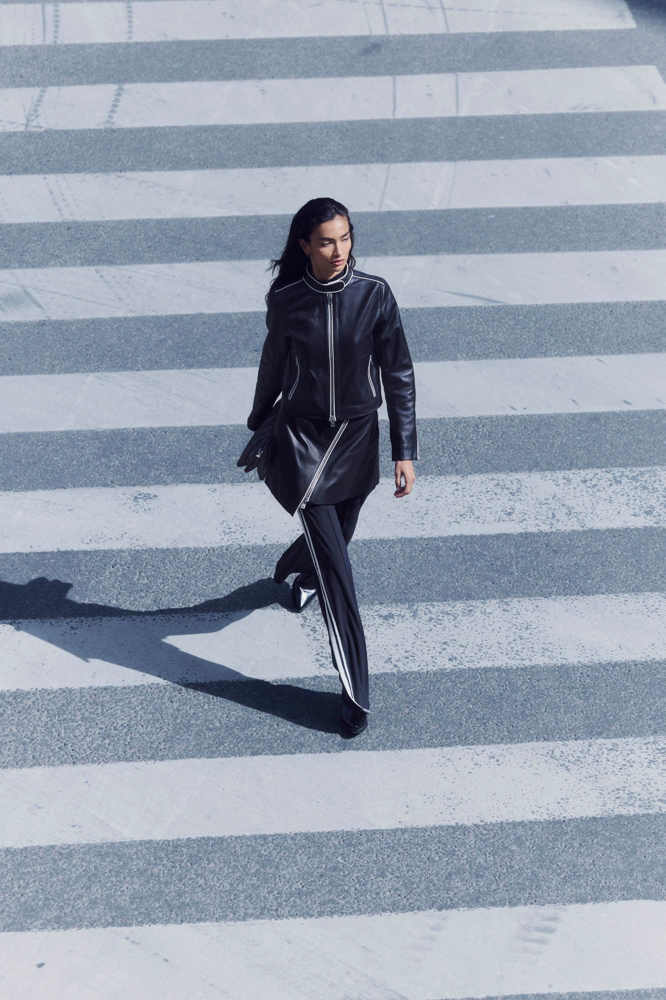
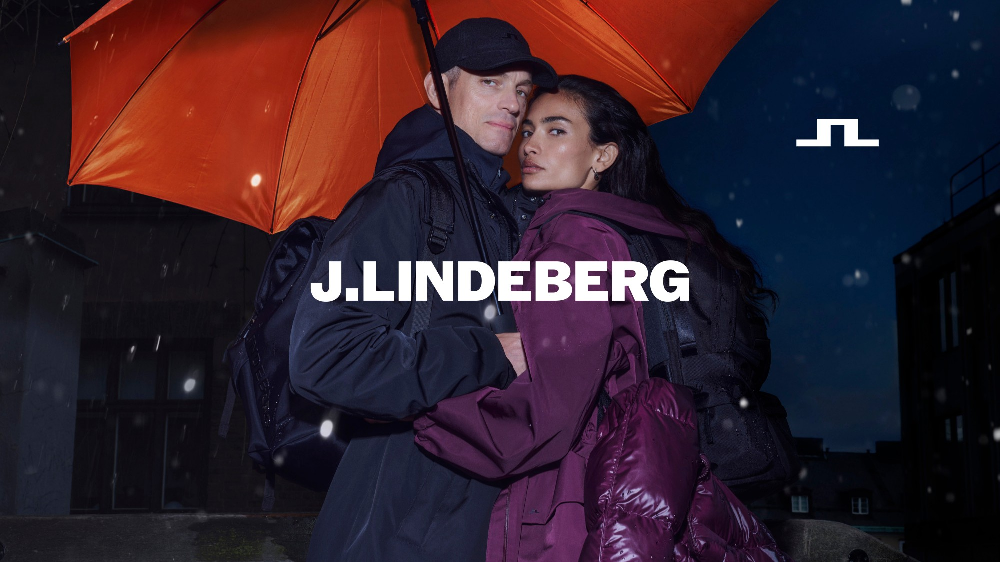
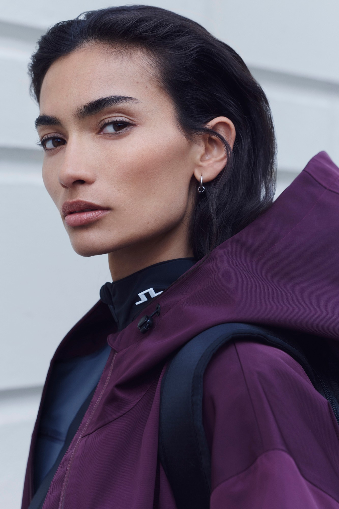
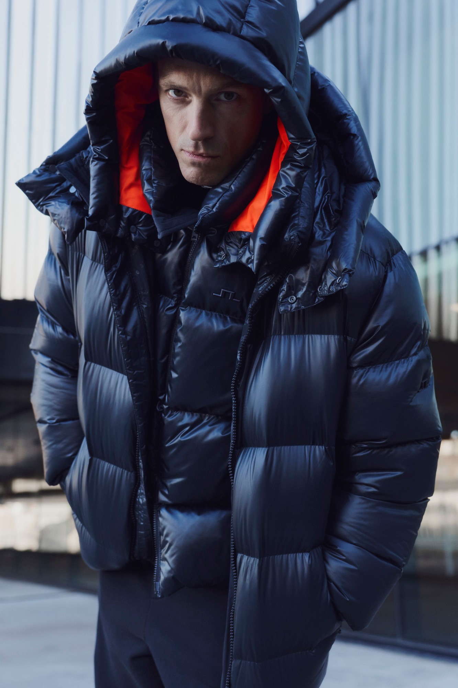
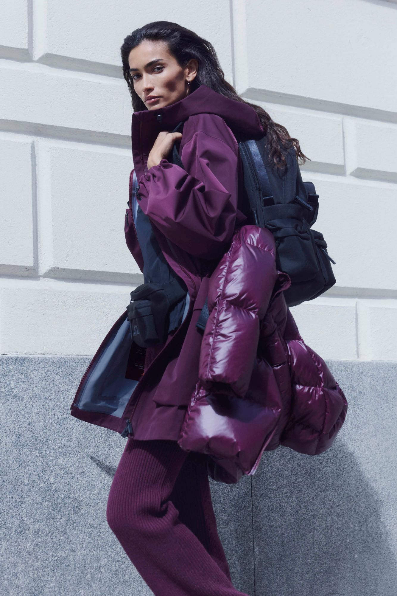
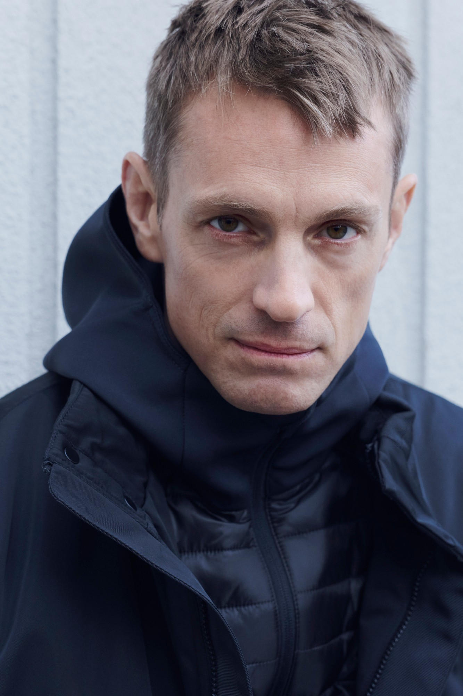

FW26 Campaign – J.LINDEBERG
J.LINDEBERG’s FW26 brand campaign, starring actor Joel Kinnaman alongside actress and model Kelly Gale.
I created the concept and led the art direction from initial idea and on-set direction through to final delivery and roll-out, and directed the campaign films.
- Client
- J.LINDEBERG
- Year
- 2026
- Role
- Concept, art direction & film direction
- Talent
- Joel Kinnaman, Kelly Gale
- Photographer
- Marco Van Rijt
- DOP
- Robert Andersson
- Stylist
- Melanie Buchave
- Hair
- Philip Fohlin
- Make-up
- Sara Eriksson







